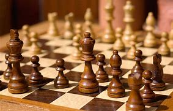

I first started playing chess when I was in grade one at six years old.
I enjoy chess because it requires critical thinking and can be very challenging to the mind.

Here are some of my most inspirational chess players with their years born and their rating at some point in time.
| Magnus Carlsen | Viswanathan Anand | Garry Kasparov |
|---|---|---|
| Born 1990 | Born 1969 | Born 1963 |
| Rating: 2882 | Rating: 2765 | Rating: 2812 |
I first started playing chess when I was in grade one.
As expected, when I first started playing chess, I was terrible.
However, as I grew up, I joined many chess clubs on the way. In total, I have joined four chess clubs in my entire life
and I am currently a member of the Seneca Hill chess club in the "Chess and Math" organsiation.
I occasionally participate in tournaments, but not as often since a normal tournament generally takes up to 4-5 hours to finish.
My current "Chess and Math" rating is 1312 and I am also the top 19th junior (grade 7-12) chess player in Ontario, in the organisation of course.
My practice and experience in the tournaments and clubs have made me into a more adept chess player.
Unfortunately, I am not doing so well in the CFC (Chess Federation of Canada) organisation.
In CFC, my current rating is 1051. This is partly because there are more serious players in the organisation.
However, I do often beat people who are 1200-1400 rated. So really, I think it's just my lack of participation in tournaments
that has resulted in my mediocre profile and my lack of development. Although I don't often participate in chess tournaments, I get really excited when I do
and I think of it as an opportunity to grow myself.
To me, I think of chess as a sport. Now I know many people would disagree with me on this one but first lets look at the definition of the word "sport". Many people think of sports as a competitive activity requiring physical exertion and that may very well be true, however, I think of sports as a competitive activity that requires the use of skill and tactics to accomplish an objective. This is true in many and if not all kinds of "sports". An example could be baseball. Yes, in baseball we do often need physical attributes in order to play, but in the actual game strategies, the brain beats the brawn. Chess is like this as well. It is a competitive activity that requires skill and the use of tactics to beat the opponent. That is my argument for why chess is a sport and why people should start thinking of it as one.
There are a lot of openings in a chess game, maybe even too many, but this only helps people choose the one that is right for them. However, one doesn't have to directly adopt an opening as their main playing style. If someone prefers to change the way they play often, they can simply switch between different openings that they are comfortable playing. Of course one would have to study that opening first. If someone is like me and likes to just stick with one opening, then that would be fine as well. Although, the more people get to know you, the harder it will be since everyone will know your playing style. As for the openings I play, I play the Colle-Zukertort system as white and the Philador as black. I use these two openings because they don't require much thinking and can easily destroy an opponent with the right moves. Some of my previous openings are: Scotch, Scotch Gambit, and the Sicilian defense Dragon variation. Also, just a fact, I am really bad at chess when there are no ratings involved. What I mean by this is that if there is nothing at stake in a game, I tend not to think too much, even if I want to. In conclusion, chess is one of my favourite hobbies and it's somthing I do in my free time.
If you want to look at my other hobbies they're on drawing and golf.
Return to the top of the page.